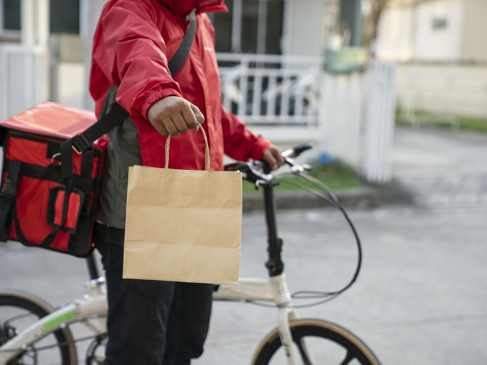

The "HUNGRY FOR FAIR PAY" project was created out of an immediate need to address the long-running issue of the pay gap for food delivery workers in New York City. This report discusses the process of researching, acknowledging, and advocating in this critical area of urban labor.
In the cold days of January and February, we were exploring the options for a project to work on taking it from the busy streets of New York City. It was a time when the heart of the city seemed to beat slower with each passing day because of the temperatures, but in this vibrant energy there was an often-overlooked group, but constantly present—food delivery workers. These individuals represent the backbone of a metropolis that never sleeps, ensuring that any hunger is satisfied with their hot meal in their comfy beds at home.
Our project "HUNGRY FOR FAIR PAY" stems from the desire to honor these heroes. It was not merely an acknowledgment of their existence; It was an idea of a tribute to their unwavering commitment and pivotal role in establishing the urban fabric of New York City. As we delved deeper into the research stage, we were struck by the contrast between their visible hard work and their invisible struggles.
Research and storytelling, often seen as opposite sides of the spectrum became connected during our journey. We realized that while raw data and statistics were important, they lacked the emotional resonance necessary to convey the true essence of our message. It is through art that we can breathe life into our conclusions and amplify the voices of those we wish to honor.
The first phase of the project consisted of an extensive review of scholarly literature, government reports, and industry data. Information from sources such as Google Scholar provided extensive insight into labor practices, wage standards, and the changing landscape of resource allocation. Government databases such as NYC.gov were crucial in our case, providing an understanding of legal frameworks and policies to protect workers' rights. Although the advocating of the New York City’s government succeeded in winning a court case with the big food delivery apps (a common name for the big tech companies operating on the back of the food delivery workers), the workforce says they always find a way to cut their income. We looked into the court cases, we asked delivery workers personally about qualitative insight, we asked people who use the service what is their perception of this work force, and we analyzed reports and the history of the development of this matter.
In our project, we utilized data visualization tools like Looker Studio to craft a visual narrative that illustrated extensive data gathered from polls, research, and reports conducted with over 7000 delivery workers in New York City from 2021 to 2022. Despite initially opting for a more user-friendly format through an engaging explainer video, the timeline analysis performed in Knight Lab offered a nuanced understanding of the industry's development and key factors shaping it today. Co-creation played a pivotal role, drawing insights from various sources including the local government, Fordham University students, and delivery workers themselves. This collaborative effort, guided by professor incentives and technological tools, contributed to the creation of a visualized story that vividly depicted the challenges faced by the delivery workforce. As our project evolved, we encountered significant challenges in developing and refining the website's appearance. Navigating unfamiliar tools like Studio Visual Code and troubleshooting issues required heavy reliance on AI tools like ChatGPT and guidance from our professor. While facing hurdles with platforms like EKO, transitioning to more robust alternatives like Eko Developer and MindStamp became necessary. Despite the steep learning curve, we acquired valuable skills that will streamline future interactive projects.
.gif)
An inclusive approach was taken to capture the different perspectives. Interactive features on the site, including surveys and graphs were “translated” into an explainer video, more easily digestible for website visitors. Interviews with the food delivery workers themselves and users of their services were asked to share their views, contributing to the development of the video and audio storytelling sections of the website. All this participation enriched the project’s narrative from a variety of perspectives and experiences.
"HUNGRY FOR FAIR PAY" stands for both workers' rights and fair pay in the food delivery industry. Through rigorous research, data-driven analysis, and inclusive storytelling, the project sheds light on the challenges faced by the distribution industry, recommending meaningful structural changes and industry practices. The project aims to stimulate dialogue, and raise awareness, overall, it is also about motivation practices that will ensure equitable and fair working conditions for employees of all realms.
As educated individuals with the opportunity to access the job market that allows individuals with third-level degrees to have a competitive advantage, it is important to introspect on our privileges. Cultivating empathy for those less fortunate, who have been marginalized and exploited by an unjust system weighted in favor of the elite, is vital. Building a more ethical and inclusive society hinges on recognizing and addressing systemic inequalities, fostering a culture that celebrates individuality and diversity, and extending respect to all individuals regardless of their circumstances.

2024
